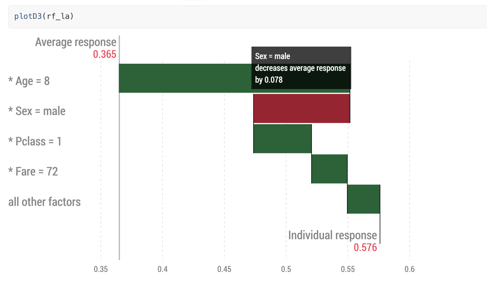

Overview
The iBreakDown package is a model agnostic tool for explanation of predictions from black boxes ML models. Break Down Table shows contributions of every variable to a final prediction. Break Down Plot presents variable contributions in a concise graphical way. SHAP (Shapley Additive Attributions) values are calculated as average from random Break Down profiles. This package works for binary classifiers as well as regression models.
iBreakDown is a successor of the breakDown package. It is faster (complexity O(p) instead of O(p^2)). It supports interactions and interactive explainers with D3.js plots.
It is a part of DrWhy.AI collection of tools for XAI.
Installation
# the easiest way to get iBreakDown is to install it from CRAN:
install.packages("iBreakDown")
# Or the the development version from GitHub:
# install.packages("devtools")
devtools::install_github("ModelOriented/iBreakDown")Learn more
Find lots of R examples at iBreakDown website: https://ModelOriented.github.io/iBreakDown/
Methodology behind the iBreakDown package is described in the arxiv paper and VEEDD book.
This version also works with D3! see an example and demo 